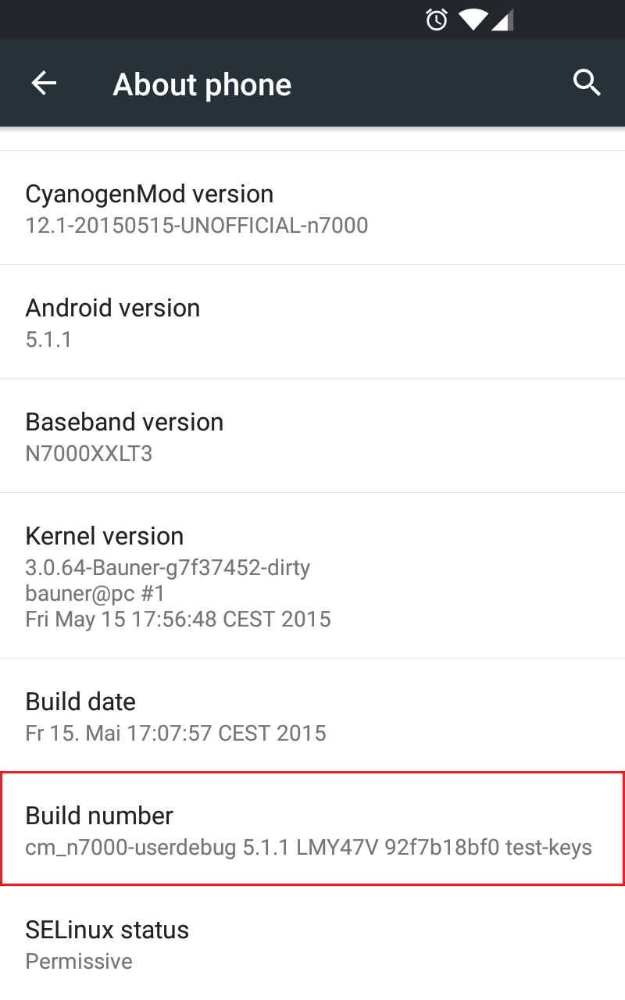

Elemente de Informatică Mobilă
Resurse
Orar
| Seria | Zi | Ora | Sala | Instructor |
|---|---|---|---|---|
| C1 + opționali | marți | 12.00-14.00 | EC101 | Dragoș |
Laborator
| Grupa | Zi | Ora | Sala | Asistent |
|---|---|---|---|---|
| 331C1 | luni | 10.00-12.00 | EG106 | Vlad |
Notă
Săptămâna de laborator începe joi (8.00-10.00) și se termină luni (12.00-14.00).
Introducere
Android Internals
Generalități despre radio
Acces la mediu
Mobilitate la nivel rețea
Mobilitate la nivel rețea
Mobilitate la nivel transport
SIP și VoIP
Mobilitate la nivel transport
SIP și VoIP
Introducere în Programarea Android
In acest laborator vom vedea cum putem dezvolta si rula prima noastra aplicatie Android.
Android - Prezentare Generală
Android este un SO mobil bazat pe o versiune modificată de Linux (pentru gestiunea componentelor hardware, a proceselor și a memoriei) și biblioteci Java (pentru telefonie (audio/video), conectivitate, grafică, programarea interfețelor cu utilizatorul). Este un produs open-source (putând fi dezvoltat de producătorii de dispozitive mobile cu extensii proprietare pentru a-și particulariza platforma), dezvoltat în prezent de compania Google, conceput pe ideea transformării dispozitivelor mobile în adevărate mașini de calcul. Google încearcă totuși să realizeze tranziția de la AOSP (Android Open Source Project) către GMS (Google Mobile Services), peste care sunt construite cele mai multe aplicații, în încercarea de a-și apăra acest proiect în fața concurenței. În acest sens, a fost dezvoltat proiectul Google One, prin care este oferit un set de specificații (ecran de 4.5 inchi - 845x480 pixeli, procesor quad-core, memorie 1GB RAM, spațiu de stocare 4GB, suport pentru dual sim) pe care producătorii de dispozitive mai ieftine trebuie să le respecte astfel încât acestea să fie compatibile cu un sistem Android, fără a întâmpina probleme de performanță. Acesta include toate aplicațiile și serviciile Google, la care se pot adăuga și altele, furnizate de producător sau operatorul de telefonie mobilă. În acest fel, se asigură calitatea (păstrând renumele Android) și controlul asupra veniturilor. Comunitatea Android este în creștere, mai multe companii renunțând la propriul sistem de operare în favoarea acestuia, pentru a putea face față fenomenului iPhone.
În condițiile în care pe piața dispozitivelor mobile aplicațiile sunt cele care aduc avantajul competițional, beneficiul Android este reprezentat de abordarea unitară pentru dezvoltarea aplicațiilor. Cu alte cuvinte, o aplicație dezvoltată conform API-ului Android va putea rula pe mai multe dispozitive mobile pe care este instalat sistemul de operare respectiv.
Versiuni Android
Pana in acest moment au fost lansate mai multe versiune de Android. In tabelul de mai jos le putem observa.
| Versiune Android | Nivel API | Data Lansării | Nume de Cod | Cota de Piață |
|---|---|---|---|---|
| 10 | 29 | 03.09.2019 | ?? | 0.?% |
| 9 | 28 | 21.08.2017 | Pie | 0.?% |
| 8.1 - 8.1 | 26-27 | 21.08.2017 | Oreo | 0.?% |
| 7.1 - 7.1.1 | 25 | 04.10.2016 | Nougat | 0.3% |
| 7.0 | 24 | 22.08.2016 | Nougat | 0.9% |
| 6.0 - 6.0.1 | 23 | 05.10.2015 | Marshmellow | 30.7% |
| 5.1 - 5.1.1 | 22 | 09.03.2015 | Lollipop | 23.1% |
| 5.0 - 5.0.2 | 21 | 12.11.2014 | Lollipop | 9.8% |
| 4.4W - 4.4W.2 | 20 | 25.06.2014 | KitKat ext | |
| 4.4 - 4.4.4 | 19 | 31.10.2013 | KitKat | 21.9% |
| 4.3 | 18 | 24.07.2013 | Jelly Bean | 1.6% |
| 4.2.x | 17 | 13.11.2012 | Jelly Bean | 5.7% |
| 4.1.x | 16 | 09.07.2012 | Jelly Bean | 4.0% |
| 4.0.3 - 4.0.4 | 15 | 16.12.2011 | Ice Cream Sandwich | 1.0% |
| 4.0 - 4.0.2 | 14 | 19.10.2011 | Ice Cream Sandwich | |
| 3.2 | 13 | 15.07.2011 | Honeycomb | |
| 3.1 | 12 | 10.05.2011 | Honeycomb | |
| 3.0 | 11 | 22.02.2011 | Honeycomb | |
| 2.3.3 - 2.3.7 | 10 | 09.02.2011 | Gingerbread | 1.0% |
| 2.3 - 2.3.2 | 9 | 06.12.2010 | Gingerbread | |
| 2.2 - 2.2.3 | 8 | 20.05.2010 | Froyo | |
| 2.1 | 7 | 12.01.2010 | Eclair | |
| 2.0.1 | 6 | 03.12.2009 | Eclair | |
| 2.0 | 5 | 26.10.2009 | Eclair | |
| 1.6 | 4 | 15.09.2009 | Donut | |
| 1.5 | 3 | 30.04.2009 | Cupcake | |
| 1.1 | 2 | 09.02.2009 | ||
| 1.0 | 1 | 23.09.2008 |

Pentru identificarea versiunilor se folosesc, de regulă, trei sisteme:
- un număr, ce respectă formatul major.minor[.build], desemnând dacă modificările aduse sunt substanțiale sau reprezintă ajustări ale unor probleme identificate anterior; versiunea curentă este 10, lansată la sfârșitul anului 2019;
- un nivel de API (același putând grupa un număr de mai multe versiuni), prin care se indică funcționalitățile expuse către programatori; versiunea curentă are nivelul de API 29;
- o denumire, având un nume de cod inspirat din lumea dulciurilor; termenii respectivi încep cu inițiale care respectă ordinea alfabetică; versiunea curentă este Q.
În momentul în care se ia decizia cu privire la versiunea pentru care se dezvoltă o aplicație Android, trebuie avute în vedere și cotele de piață ale dispozitivelor mobile. Dezvoltarea unei aplicații Android pentru cea mai nouă versiune are avantajul de a se putea utiliza cele mai noi funcționalități expuse prin API. Dezvoltarea unei aplicații Android pentru cea mai veche versiune are avantajul unei adresabilități pe scară largă. Un compromis în acest sens poate fi obținut prin intermediul bibliotecilor de suport, dezvoltate pentru fiecare versiune, prin intermediul cărora pot fi utilizate la niveluri de API mai mici funcționalități din niveluri de API mai mari (în limita capabilităților dispozitivului mobil respectiv). Utilizarea acestora reprezintă o practică recomandată în dezvoltarea aplicațiilor Android.
Arhitectura Android
Arhitectura sistemului de operare Android cuprinde cinci secțiuni grupate pe patru niveluri:

- Kernelul Linux (cu unele modificări) conține driver-ele pentru diferitele componente hardware (ecran, cameră foto, tastatură, antenă WiFi, memorie flash, dispozitive audio), fiind responsabil cu gestiunea proceselor, memoriei, perifericelor (audio/video, GPS, WiFi), dispozitivelor de intrare/ieșire, rețelei și a consumului de energie; de asemenea, au fost implementate și unele îmbunătățiri:
- Binder, sistemul de comunicație inter-proces, a fost adaptat, întrucât reprezintă mediul de comunicație principal dintre aplicații și sistemul de operare, inclusiv funcțiile (serviciile) dispozitivului mobil; expunerea sa este realizată prin intermediul AIDL (Android Interface Definition Language) prin care pot fi manipulate obiecte transformate în primitive utilizate la comunicația propriu-zisă dintre aplicații și sistemul de operare;
- Logger, sistemul de jurnalizare, este esențial în cazul în care trebuie realizată depanarea aplicațiilor, în special pentru a detecta anumite situații particulare (informații cu privire la rețea, senzori); acesta este capabil să agrege datele provenite atât de la aplicația propriu-zisă cât și de la sistemul de operare, datele fiind disponibile prin intermediul unor utilitare specializate;
- sistemul prin intermediul căruia se previne transferul sistemului de operare într-o stare de latență (wake locks), în care consumul de energie este redus, întrucât se blochează execuția oricărei aplicații; utilizarea unui astfel de mecanism trebuie realizată cu precauție, întrucât poate determina epuizarea bateriei;
- sistemul de alarme oferă posibilitatea ca anumite sarcini să fie planificate la anumite momente de timp, putând fi executate, chiar dacă sistemul de operare se găsește într-o stare de latență;
- Viking Killer este un mecanism prin care sistemul de operare revendică memoria utilizată, atunci când nivelul acesteia atinge un anumit prag (aplicațiile Android care au fost rulate anterior sunt de regulă stocate în memorie pentru a se putea comuta rapid între ele, de vreme ce încărcarea în memorie este o operație costisitoare);
- YAFFS2 (Yet Another Flash File System) este un sistem de fișiere adecvat pentru cipuri flash bazate pe porți NAND; platforma Android este stocată pe mai multe partiții, ceea ce îi conferă flexibilitate la actualizări, împiedicând modificarea sa în timpul rulării (/boot - conține secvența de pornire, /system - stochează fișierele de sistem și aplicațiile încorporate, /recovery - deține o imagine din care se poate restaura sistemul de operare, /data - include aplicațiile instalate și datele aferente acestora, /cache - utilizată pentru fișiere temporare, folosind memoria RAM, pentru acces rapid).
- Bibliotecile (user-space) conțin codul care oferă principalele funcționalități a sistemului de operare Android, făcând legătura între kernel și aplicații. Sunt incluse aici motorul open-source pentru navigare WebKit, biblioteca FreeType pentru suportul seturilor de caractere, baza de date SQLite utilizată atât ca spațiu de stocare cât și pentru partajarea datelor specifice aplicațiilor, biblioteca libc (Bionic), biblioteca de sistem C bazată pe BSD și optimizată pentru dispozitive mobile bazate pe Linux, biblioteci pentru redarea și înregistrarea de conținut audio/video (bazate pe OpenCORE de la PacketVideo), biblioteci SSL pentru asigurarea securității pe Internet și Surface Manager, bibliotecă pentru controlul accesului la sistemul de afișare care suportă 2D și 3D. Aceste biblioteci nu sunt expuse prin API, reprezentând detalii de implementare Android.
- Motorul Android rulează serviciile de platformă precum și aplicațiile care le utilizează, fiind reprezentat de:
- ART (Android Runtime) este mașina virtuală Java care a fost implementată începând cu versiunea 5.0, folosind un tip de compilare AOH (Ahead of Time), în care bytecode-ul este transpus în cod mașină la momentul instalării, astfel încât acesta este executat direct de mediul dispozitivului mobil; compatibilitatea cu versiuni anterioare (care folosesc mașina virtuală Dalvik, ce se bazează pe un compilator JIT - Just in Time) este asigurată prin transformarea pachetelor în format .dex (Dalvik Executable) la momentul compilării, urmând ca translatarea în format .oat să se realizeze la momentul instalării; fiecare aplicație Android rulează în procesul propriu, într-o instanță a mașinii virtuale ART, izolând astfel codul și datele sale prin intermediul unor permisiuni, care se aplică inclusiv la comunicația prin intermediul interfețelor de comunicare oferite de sistemul de operare Android;
- Zygote este procesul care gestionează toate aplicațiile, fiind lansat în
execuție odată cu sistemul de operare:
- inițial, creează o instanță a mașinii virtuale Java pentru sistemul de operare Android, în contextul căreia plasează serviciile de bază: gestiunea energiei, telefonie, furnizori de conținut, gestiunea pachetelor, serviciul de localizare, serviciul de notificări;
- atunci când este necesar să lanseze în execuție o anumită aplicație, se clonează, partajând astfel componentele sistemului de operare Android, astfel încât să se asigure performanța (timp de execuție) și eficiența (memorie folosită), de vreme ce fiecare aplicație trebuie rulată în propria sa instanță a mașinii virtuale Java;
- Cadrul pentru Aplicații expune diferitele funcționalități ale sistemului de operare Android către programatori, astfel încât aceștia să le poată utiliza în aplicațiile lor.
- La nivelul de aplicații se regăsesc atât produsele împreună cu care este livrat dispozitivul mobil (Browser, Calculator, Camera, Contacts, Clock, FM Radio, Launcher, Music Player, Phone, S Note, S Planner, Video Player, Voice Recorder), cât și produsele instalate de pe Play Store sau cele dezvoltate de programatori.
Funcționalități Android
De vreme ce Android este un produs open-source, producătorii având posibilitatea de a-l modifica în mod gratuit, nu există configurații hardware sau software standard. Totuși, Android implementează următoarele funcționalități:
- stocare - folosește SQLite, o bază de date relațională ce utilizează resurse puține
- conectivitate - suportă GSM/CDMA, GPRS, EDGE, 3G, IDEN, EV-DO, UMTS, Bluetooth (inclusiv A2DP si AVRCP), WiFi, LTE, WiMAX
- WiFi Direct - tehnologie care permite aplicațiilor să se descopere și să se interconecteze peste o conexiune punct-la-punct având lățime de bandă mare
- Android Beam - o tehnologie bazată pe NFC (Near Field Communication) care permite utilizatorilor să partajeze conținut instant, prin apropierea dispozitivelor mobile respective
- mesagerie - atât SMS cât și MMS
- navigare pe Internet - bazat pe motorul open source pentru navigare WebKit impreună cu motorul JavaScript de la Chrome V8 suportând HTML5 și CSS3
- multimedia - suportă formatele H.263, H.264 (într-un container 3GP sau MP4), MPEG-4 SP, AMR, AMR-WB (într-un container 3GP), AAC, HE-AAC (într-un container MP4 sau 3GP), MP3, MIDI, Ogg Vorbis, WAV, JPEG, PNG, GIF si BMP
- grafică - 2D optimizată, 3D (OpenGL ES)
- senzori - accelerometru, cameră foto, busolă digitală (magnetometru), senzor de proximitate, GPS / AGPS
- multi-touch - suportă ecrane cu posibilitate de contact în mai multe puncte concomitent
- multi-tasking - permite rularea de aplicații cu mai multe fire de execuție
- GCM (Google Cloud Messaging) - serviciu ce permite dezvoltatorilor să trimită date de dimensiuni mici către utilizatori pe dispozitive Android, fără a avea nevoie de o soluție de sincronizare proprietară
- multi-Language - suport pentru text unidirecțional și bidirecțional
- suport pentru aplicații Flash (până în versiunea 4.3)
- legătură la Internet - suportă partajarea conexiunilor la Internet ca punct de distribuție cu fir / fără fir
Android vs. iPhone
Piața de telefoane inteligente este dominată de Android (care - potrivit estimărilor - își va menține supremația până în 2018), cu 82.8% (peste un miliard de dispozitive vândute) pe întreg anul 2015, în timp ce Apple deține doar 13.9%, la nivel mondial.
În 2015, numărul de aplicații disponibile pentru platforma Android le-a depășit pe cele destinată dispozitivelor Apple (1.6 milioane, comparativ cu 1.5 milioane). Și în privința numărului de descărcări Android se află în fața Apple cu aproximativ 25%. Totuși, politica de distribuție a aplicațiilor (faptul că aplicațiile iPhone pot fi instalate numai prin intermediul App Store, în timp ce Android pune la dispoziție mai multe posibilități - Play Store, Amazon App Store, prin conexiune USB de la calculator, prin email sau prin pagina Internet a organizației), la care se adaugă numărul mare de programe gratuite și posibilitatea de piratare mai ușoară se traduce prin încasările obținute, Apple generând un profit mult mai mare din aplicații decât Google (cifrele oficiale nu sunt disponibile încă). O altă explicație a acestei situații este dată și de potența financiară a posesorilor de produse Apple (valoarea unui iPhone fiind de aproximativ 600 dolari) față de puterea de cumpărare a persoanelor ce dețin un telefon Android (al cărui preț mediu este de 200-300 dolari), existând o corespondență directă cu disponibilitatea de a achiziționa aplicații. De asemenea, statisticile arată că utilizatorii Apple își folosesc mult mai intens dispozitivele pentru accesarea de conținut Internet decât cei cumpărătorii de produse echipate cu Android.
Aplicațiile destinate dispozitivelor mobile reprezintă un segment extrem de productiv al economiei, doar vânzările din AppStore depășind încasările obținute din producția de filme de la Holywood. Ca tematică, cele mai multe aplicații aparțin domeniului social (jocuri, fotografie, muzică, aplicații culinare, stil de viață), urmate de cele destinate gestionării unor segmente ale unor afaceri.
În privința limbajului de programare utilizat pentru dezvoltarea de aplicații mobile, iPhone folosește Objective-C, similar cu C++, care nu se bucură însă de o răspândire prea largă (cu excepția aplicațiilor pentru iPhone), în timp ce Android utilizează Java (limbajul de programare cel mai adoptat pe scară largă în cadrul corporațiilor) dar și C/C++, prin care se pot apela (cu o oarecare dificultate) aplicații native, prin suport JNI (numărul bibliotecilor disponibile în cazul C/C++ este mai redus decât în Java, însă viteza aplicațiilor este mai mare). Dezvoltarea aplicațiilor pentru iPhone se poate realiza numai folosind mașini Mac (echipate cu MacOS), în timp ce aplicațiile Android pot fi scrise în orice sistem de operare cu Java și Eclipse (atât PC-uri cât și Mac-uri echipate cu Windows, Linux sau MacOS). În această situație, se pune problema cotelor de piață ale sistemelor de operare în cadrul companiilor dezvoltatoare de software, care creează sau nu oportunități pentru dezvoltarea unui anumit tip de aplicații (la începutul lui 2016, sistemele de operare Windows dețineau 90,60% din piață, OS X 7,68%, sistemele de operare cu kernel Linux 1,71%, iar alte sisteme de operare 0,01%).
Așadar, dacă pentru utilizare personală nu se poate stabili un câștigător clar între Android și iPhone (deși produsul celor de la Apple pare să aibă un ușor avantaj printr-un număr mai mare de aplicații și prin loialitatea clienților), în cazul aplicațiilor dezvoltate de corporații situația este inversă, date fiind posibilitățile de instalare și limbajul de programare folosit.
Comunitatea programatorilor Android
Ajunsă deja la a șaptea versiune, Android este o platformă care beneficiază de experiența a numeroși dezvoltatori ce poate fi exploatată:
- Google Android Training conține o serie de tutoriale și exemple de clase grupate în funcție de diferite subiecte, utile pentru deprinderea cunoștințelor de bază pentru dezvoltarea aplicațiilor Android.
- Stack Overflow este un forum pentru programatori editat în mod colaborativ, conținând întrebări și răspunsuri la acestea (cele mai bune putând fi identificate cu ușurință prin voturile primite de la participanți). Este destul de probabil ca o întrebare să își găsească deja răspunsul pe acestă resursă.
- Android Discuss este o listă de discuții monitorizată îndeaproape de echipa Android de la Google astfel încât reprezintă un loc unde pot fi clarificate numeroase nelămuriri putând fi însușite diferite sfaturi și trucuri.
Cerințe pentru dezvoltarea unei aplicații Android (obligatoriu)
Pentru dezvoltarea unei aplicații Android sunt necesare:
- kit-ul de dezvoltare pentru limbajul de programare Java
- SDK-ul de Android
, pentru care se descarcă definițiile corespunzătoare unuia sau mai multor niveluri de API - un mediu integrat de dezvoltare (IDE)`
- un dispozitiv pe care să se ruleze aplicațiile`
- un emulator`
- Genymotion
- Android Virtual Device (livrat împreună cu SDK-ul de Android)
- un telefon mobil cu sistemul de operare Android pentru care s-a dezvoltat aplicația\ \ Pentru a se putea rula o aplicație pe un dispozitiv mobil fizic, trebuie să se activeze posibilitatea de depanare prin USB, din //Settings// → //System// → //Developer Options//. Această opțiune trebuie activată, ca de altfel și opțiunea //Debugging// → //Android Debugging// (pe unele sisteme poate apărea ca //USB Debugging//).\ \ 
- un emulator`
Dacă telefonul nu este recunoscut la conectarea prin USB, trebuie instalate niște reguli pentru udev, conform instrucțiunilor de pe stackexchange:
student@eim-lab:~$ sudo bash
student@eim-lab:~# lsusb
După ce s-a identificat dispozitivul mobil (prin intermediul comenzii lsusb), se precizează o regulă pentru acesta:
student@eim-lab:~# cat /etc/udev/rules.d/51-android.rules
<file text /etc/udev/rules.d/51-android.rules> SUBSYSTEM==\"usb\",
ATTR{idVendor}==\"18d1\", ATTR{idProduct}==\"d002\", MODE=\"0660\",
GROUP=\"plugdev\", SYMLINK+=\"android%n\"
Se reîncarcă dispozitivele conectate prin USB:
student@eim-lab:~# /etc/init.d/udev restart
Fie că ați instalat un emulator, fie un telefon conectat prin cablu USB, puteti verifica că el este pornit si este vizibil
/opt/Android/SDK/platform-tools/adb devices
Dacă dispozitivul este listat, va puteti conecta la prompt:
/opt/Android/SDK/platform-tools/adb shell
Versionare
In cadrul laboratorului vom folosi git pentru versionare.
Daca nu ati mai folosit git pana acuma, va trebui sa va configurati username-ul si mail-ul cu care vreti sa semnati viitoarele commit-uri.
$ git config --global user.name "YOUR_USERNAME"
$ git config --global user.email "your_email@gmail.com"
Vom creea un nou folder si in el o sa initializam un repository.
❯ mkdir my_git_repo
❯ cd my_git_repo
❯ touch README.md
# initializam un nou repository
❯ git init
Acuma o sa scrie "Hello World" in fisier si o sa facem primul nostru commit
# Aici puteti edita fisierul cu orice vreti voi
❯echo "Hello world" > README.md
# Urmatoarea comanda ne va afisa statusul repo-ului
❯ git status
On branch master
No commits yet
Untracked files:
(use "git add <file>..." to include in what will be committed)
README.md
# Facem urmatoarea operatie: Adaugam fisierul README.md in commit
❯ git add README.md
# Inregistram commit-ul
❯ git commit -m "Added README.md to the repo"
De fiecare data cand facem modificari, o sa folosit git add si git commit.
Pentru a afisa un log folosim git log.
git log
commit 70fc4d5fe8c2bbd674a2812ef85178716c7f15ca (HEAD -> master)
Author: My Username <my_email@gmail.com>
Date: Thu Feb 16 00:46:32 2023 +0200
Add README.md to the repo
Pentru a vedea diferentele fata de ultimul commit:
git diff HEAD HEAD^
Acuma, vom folosi Github pentru a stoca repository-ul online. Va trebui sa va faceti un cont pe Github si sa creati un repository nou.
# Adaugam un loc de stocare online, o singura data
git remote add origin git@github.com:some_repo_you_created
# Incarcam tot ce avem pe local pe online, de fiecare data cand
# vrem sa facem update la ce este online
git push -u origin master
Daca vreti sa aflati mai multe, va recomandam urmatorul articol.
Crearea unei aplicații Android în Android Studio
Pentru a crea o aplicație Android se selectează Start a New Android Studio project.

Configurarea proiectului presupune specificarea unor parametri:
- denumirea aplicației;
- domeniul companiei care dezvoltă aplicația respectivă.
Pe baza valorilor introduse, se generează denumirea pachetului care va identifica în mod unic aplicația. Acesta este format din domeniu (scris în formă inversă) la care se adaugă denumirea aplicației (din care sunt eliminate caracterele albe).
De asemenea, este necesar să se indice locația la care va fi plasat proiectul respectiv.

Se indică platforma căreia îi este destinată aplicația Android:
- dispozitiv mobil (telefon sau tabletă), caz în care trebuie să se precizeze valoarea minimă a nivelului de API pentru care se dezvoltă aplicația (cea mai scăzută valoare a platformei pe care poate rula aplicația);
- obiect vestimentar (ceas, brățară);
- televizor;
- dispozitiv pentru automobil;
- ochelari inteligenția;

Este selectat tipul de actvitate care va fi vizualizată în momentul în care aplicația Android este pornită (//Blank Activity//, //Empty Activity//, //Fullscreen Activity//, //Google AdMob Activity//, //Google Maps Activity//, //Login Activity//, //Master/Detail Flow//, //Navigation Drawer Activity//, //Scrolling Activity//, //Settings Activity//, //Tabbed Activity//).

Se stabilește o denumire pentru activitatea principală, precum și denumirea fișierelor în care vor fi plasate structura interfeței grafice, respectiv a meniului asociat. Se poate preciza, de asemenea, folosirea de fragmente în cadrul activității.

Se apasă butonul Finish.
Rularea unei aplicații Android se face prin intermediul unei pictograme asociate unei liste de selecție, în care sunt plasate toate aplicațiile disponibile în cadrul mediului integrat de dezvoltare. Se poate folosi și prescurtarea Shift + F10.

Utilizatorul are posibilitatea de a selecta dispozitivul pe care va fi rulată aplicația, dintre cele conectate la mașina pe care se rulează.


Testarea exemplelor de aplicații Android în Android Studio
Accesarea unui exemplu de aplicație Android se face prin intermediul opțiunii //Import an Android code sample//.

Pot fi consultate mai multe proiecte Android, pentru fiecare existând posibilitatea de a vizualiza codul sursă, disponibil în cadrul unui depozit GitHub. Gruparea aplicațiilor Android este realizată pe categorii tematice.

Un exemplu de aplicație Android, care se descarcă din contextul depozitului Github, poate fi redenumită, stabilindu-se și locația la care va fi stocată.


Activitate de Laborator
- Să se instaleze toate instrumentele necesare pentru a putea dezvolta o aplicație Android.
- kit de dezvoltare pentru limbajul de programare Java;
- SDK pentru Android;
- mediu integrat de dezvoltare Android Studio cu plugin-uri pentru Android, Genymotion;
- emulator Genymotion în care se configurează un dispozitiv virtual Phone - 7.0 - API 24 - 960x540;
- Să se instaleze Git, în cazul în care nu există deja.
- Să se acceseze GitHub și să se creeze un cont.
- Să se realizeze configurațiile globale, specificând informații precum user.name, user.email, core.editor, merge.tool. Verificați faptul că informațiile au fost introduse corect, prin două metode diferite.
student@eim-lab:~$ git config --global user.name "Perfect Student" student@eim-lab:~$ git config --global user.email "perfect_student@cti.pub.ro" student@eim-lab:~$ git config --global core.editor gedit student@eim-lab:~$ git config --global merge.tool diff Verificarea valorii pe care o au variabilele de configurare poate fi realizată în mai multe moduri: student@eim-lab:~$ git config --list student@eim-lab:~$ cat .git/config student@eim-lab:~$ git config user.name student@eim-lab:~$ git config user.email student@eim-lab:~$ git config core.editor student@eim-lab:~$ git config merge.tool - Să se creeze un depozit pe contul Github creat, denumit 'Laborator01'. Inițial, acesta trebuie să fie gol (nu trebuie să bifați nici adăugarea unui fișier README.md, nici a fișierului .gitignore sau a a fișierului LICENSE).`
- Să se cloneze în directorul de pe discul local conținutul depozitului la distanță de la www.github.com/eim-lab/Laborator01. În urma acestei operații, directorul Laborator01 va trebui să se conțină un director labtaks care conține proiectele AndroidStudio denumite MyFirstAndroidApplication, fișierele README.md și LICENSE și un fișier .gitignore care indică tipurile de fișiere (extensiile) ignorate. student@eim-lab:~$ git clone https://www.github.com/eim-lab/Laborator01.git
- Să se încarce conținutul descărcat în cadrul depozitului 'Laborator01' de pe contul Github personal. student@eim-lab:~$ cd Laborator01
tudent@eim-lab:~/Laborator01$ git remote add Laborator01_perfectstudenthttps://github.com/perfectstudent/Laborator01tudent@eim-lab:~/Laborator01$ git push Laborator01_perfectstudent master` - Să se ruleze aplicația schelet:`
- în Android Studio: //Open an existing Android Studio project// și se indică directorul Laborator01/labtasks/androidstudio;`
- În fișierul MainActivity.java din pachetul ro.pub.cs.systems.eim.lab01 (directorul src), să se modifice metoda onClick a clasei interne ButtonClickListener astfel încât:`
- mesajul afișat să includă numele utilizatorului, așa cum apare în widget-ul de tip EditBox;
greetingTextView.setText(greetingTextView.getText().toString().replace("xxx", "\n"+userNameEditText.getText())); - să se aplice un efect de fade, astfel încât mesajul afișat să dispară treptat în decurs de TRANSPARENCY_EFFECT_DURATION milisecunde.
AlphaAnimation fadeEffect = new AlphaAnimation(1.0f, 0.0f); fadeEffect.setDuration(TRANSPARENCY_EFFECT_DURATION); fadeEffect.setFillAfter(true); greetingTextView.setAnimation(fadeEffect); - mesajul afișat să includă numele utilizatorului, așa cum apare în widget-ul de tip EditBox;
- Să se încarce modificările realizate în cadrul depozitului 'Laborator01' de pe contul Github personal, folosind un mesaj sugestiv.
student@eim-lab:~/Laborator01$ git add MyFirstAndroidApplication/src/ro/pub/cs/systems/eim/lab01.MainActivity.java student@eim-lab:~/Laborator01$ git commit -m "implemented functionality for customized message and fade effect" student@eim-lab:~/Laborator01$ git push Laborator01_perfectstudent master - Să se ruleze un exemplu de proiect Android, dintre cele disponibile, folosind dispozivitul virtual instalat în cadrul emulatorului Genymotion. Să se simuleze un eveniment de tipul rotirea ecranului și să se observe modul în care se comportă aplicația.
- în Android Studio, AccelerometerPlay , din cadrul categoriei //Getting Started//. (sau
[https://github.com/googlearchive/android-AccelerometerPlay](https://github.com/googlearchive/android-AccelerometerPlay))
- în Android Studio, AccelerometerPlay , din cadrul categoriei //Getting Started//. (sau
Resurse Utile {#resurse_utile}
Dashboards\\ Download Android Studio and SDK Tools - Android Developers\\ Genymotion\\ How to upgrade glibc from version 2.13 to 2.15 on Debian?\\ Mobile War By The Numbers: iOS vs. Android, Apps, Web and More... \\ Scott CHACON, Pro Git, Apress, 2009 - capitolele 1-3\\ GitHub
Structura unei Aplicații (I) - Activități
Proiectarea Interfețelor Grafice
Structura unei Aplicații (II) - Intenții
Structura unei Aplicații (III) - Servicii
Comunicația prin Sockeți TCP
Invocarea de Servicii Web prin Protocolul HTTP
Descoperirea Serviciilor de Rețea
Gestiunea Apelurilor Multimedia folosind SIP & VoIP
Utilizarea Serviciilor de Localizare
Împărțirea pe Semigrupe
- În cadrul unei ore de laborator pot participa maxim 15 studenți.
- Transferurile între intervale orare sunt permise atâta vreme cât nu este depășită capacitatea laboratorului, la schimb cu un alt student, pentru a se asigura o echilibrare a încărcării. Mutări ale studenților sunt permise până în săptămâna a 2-a, după care formațiile de lucru rămân definitive. Transferurile se fac în persoană, cu acordul asistentului, în măsura spațiului disponibil.
- Marcarea persoanelor care și-au schimbat semigrupa din care făceau parte se face prin font italic.
- Restanțierii pot participa la orele de laborator în oricare dintre intervale, fără a depăși însă limita impusă cu privire la numărul de locuri.
Regulament
Disciplina Elemente de Informatică Mobilă este inclusă în planul de învățământ al specializării C1: Arhitectura Sistemelor de Calcul, fiind destinată studenților anului IV din cadrul Facultății de Automatică și Calculatoare a Universității "Politehnica" București, programul de studii Calculatoare.
Sunt prevăzute, săptămânal, 2 ore de curs, desfășurate în sala EC101 și 2 ore de laborator, desfășurate în sala EG106 (laboratorul Ixia). În urma promovării acestei discipline vor fi obținute 5 puncte de credit transferabile (ECTS).
Notare
Nota la disciplina Elemente de Informatică Mobilă este formată din:
- test final (30%)
- activitate pe parcursul semestrului (70% + 10% bonus lab + 10% bonus curs)
Final ACTIVITATE PE PARCURS
30% Test curs Colocvii Bonus lab Bonus curs
20% 50% 10% 10%
Pentru promovarea disciplinei, este necesar să se întrunească, în ordine, următoarele condiții:
- maximum 4 absențe la laborator
- obținerea unui punctaj de minim 35% din punctajul de laborator, partial, bonus lab (50% + 20% + 10%)
- obținerea unui punctaj general (≥ 50%)
Test final
Testul final este scris și se desfașoară în sesiunea de vară. El poate fi susținut de studenții cu o activitate corespunzătoare pe parcursul semestrului (minim 35p obținute pe parcurs). Este permis accesul cu orice fel de materiale, cu condiția ca acestea să fie individuale și să se găsească pe suport fizic. Nu este permis accesul cu dispozitive electronice de comunicare.
Test parțial
La mijlocul semestrului va fi programat un test din materialul predat în prealabil.
Colocvii
In săptămânile ~6 și 14, în cadrul orelor de laborator, se vor desfășura două colocvii la care prezența este obligatorie. Colocviul este un test practic, desfășurat pe parcursul unui interval de timp limitat, în care se solicită rezolvarea unui set de sarcini punctate independent. Pe tot parcursul colocviului, este permisă consultarea documentației, inclusiv în format electronic. Este strict interzisă folosirea oricăror mijloace de comunicație pentru a colabora cu colegii sau cu alte persoane.
Punctajul total maxim pentru cele două colocvii este de 50%, acesta este distribuit 20% primului colocviu, 30% celui de-al doilea. Nu este posibilă refacerea colocviilor în sesiunile de restanțe.
Bonus laborator
Prezența și activitatea la laborator nu fac parte din notă, aceasta considerând doar cele 2 colocvii. Pe parcursul celor 2 ore de laborator veți avea însă acces (doar din EG106) la un chestionar de 3 întrebări / 3 minute care verifică parcurgerea materialului pregătitor acelei săptămâni (întrebările au un singur răspuns corect). Pentru a avea acces la chestionare, trebuie să folosiți conturile de Moodle pe site-ul wi-fi.cs.pub.ro/eim
Scorul obținut la aceste chestionare va adăuga încă 10% (1 punct la nota finală).
Bonus curs
Un sistem similar de bonusuri bazat pe același cont va fi disponibil si pentru curs. La unele cursuri veti primi bilete cu coduri de acces care vă permit accesul la un chestionar online cu întrebări din cursul la care ați participat. Întrebările pot avea mai multe răspunsuri corecte, și nu se punctează parțial decât în cazul în care nu marcați vreunul dintre răspunsurile incorecte (De exemplu dacă răspunsurile a și c sunt corecte, și bifați doar a, veți primi 50% din întrebare; dacă bifați și f, veți primi 0 pentru acea întrebare).
Scorul obținut la aceste chestionare va adăuga încă 10% (1 punct la nota finală).
Restanță
Exemenele din sesiunea de restanță se desfășoară oral, și sunt pentru punctajul corespunzător examenului(30%), nu pentru punctajele obținute pe parcurs. Nu se pot reface în restanță: punctajele de laborator, testul parțial, punctajele de bonus de la laborator/curs.
Organizare
-
Laboratorul se desfășoară pe semigrupe, are alocate 2 ore săptămânal și se desfășoară în sala EG106 (laboratorul Ixia).
-
Laboratoarele sunt obligatorii (cf. Regulamentului UPB), dar un maximum de 4 absențe sunt acceptabile.
-
Este permis transferul de studenți între semigrupe în săptămânile 1-2 ale semestrului (printr-o cerere în persoană către asistentul de laborator), la schimb, atâta timp cât nu se depășește numărul de 15 studenți per interval orar. Din săptămâna 2 nu se mai permit nici un fel de modificări în formația de studiu. Studenții care refac laboratorul în acest an universitar pot veni la orice laborator, în funcție de orarul celorlalte materii.
-
Adresarea între cadrul didactic şi studenţi se va face la persoana a II-a singular.
-
Ideal, fiecare laborator va începe la :05 pentru ca impactul asupra studenţilor ce întârzie să fie minim. După acest interval de timp, accesul studenților în sală nu va mai fi permis.
-
Fiecare laborator va dispune de un suport electronic care se va publica pe site cu o zi înainte de ora în cauză. Acesta va consta dintr-un document (in format wiki) în care noţiunile sunt expuse amănunţit şi din unul sau mai multe (schelete de) proiecte ce vor fi utilizate pentru rezolvarea sarcinilor ce vizează fixarea cunoştinţelor expuse teoretic.
-
Este OBLIGATORIU ca studenţii să parcurgă suportul de laborator înainte de desfăşurarea orei - in special sectiunile marcate ca fiind obligatorii -, astfel încât să fie familiarizaţi cu problematica acestuia.
-
În prima parte a laboratorului (maxim 20 de minute) se vor prezenta noţiunile cu care urmează să se lucreze în cadrul orei şi care vor fi evaluate in cadrul colocviilor.
-
În a doua parte a laboratorului, se vor rezolva sarcini în legătură cu tematica în cauză.
-
Rezolvările la sarcinile propuse în cadrul laboratorului vor fi publicate pe [[https://github.com/eim-lab|contul de github]] al disciplinei.
-
BYOD Sunteţi încurajaţi ca la orele de laborator să veniţi cu laptopurile personale și/sau cu dispozitivele mobile personale. Astfel, veți avea configurate pe mașinile proprii mediile de lucru necesare rezolvării sarcinilor de la orele de laborator, care pot fi continuate și acasă.
-
În situația în care veți lucra folosind calculatoarele din laborator, se recomandă încărcarea codului sursă aferent proiectului Android în contul personal de GitHub, astfel încât să se poată relua procesul de implementare de pe orice mașină.
Frauda Academică
Se consideră fraudă academică orice incercare de colaborare cu colegii sau cu alte persoane, inclusiv prin intermediul mijloacelor de comunicare electronice, in timpul colocviilor sau al examenului scris.
Într-o astfel de situație, se va anula întregul punctaj aferent activității de pe parcursul semestrului, ceea ce atrage dupa sine refacerea disciplinei în anul universitar următor.
Anunțuri
Calendar
Împărțirea pe Semigrupe
- În cadrul unei ore de laborator pot participa maxim 15 studenți.
- Transferurile între intervale orare sunt permise atâta vreme cât nu este depășită capacitatea laboratorului, la schimb cu un alt student, pentru a se asigura o echilibrare a încărcării. Mutări ale studenților sunt permise până în săptămâna a 2-a, după care formațiile de lucru rămân definitive. Transferurile se fac în persoană, cu acordul asistentului, în măsura spațiului disponibil.
- Marcarea persoanelor care și-au schimbat semigrupa din care făceau parte se face prin font italic.
- Restanțierii pot participa la orele de laborator în oricare dintre intervale, fără a depăși însă limita impusă cu privire la numărul de locuri.